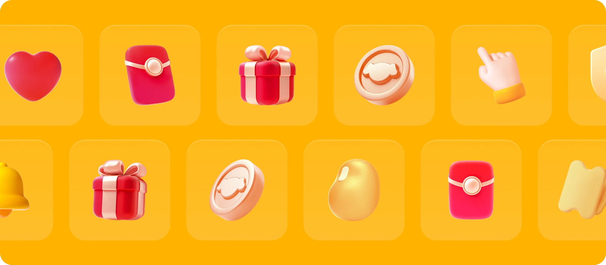
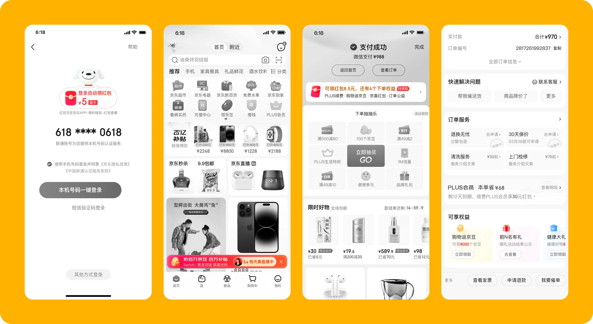

项目概览
时间与类型
时间周期：2023-2024
项目类型：主站营销素材库搭建
我的角色
主 3D 视觉设计师
项目背景
本次项目将 App 中常用图标与配图素材统一3D化，强化视觉品质，并方便各模块调用。

时间周期：2023-2024
项目类型：主站营销素材库搭建
主 3D 视觉设计师
本次项目将 App 中常用图标与配图素材统一3D化，强化视觉品质，并方便各模块调用。
在京东 App 主流程中，红包、京豆、优惠券、礼盒等营销元素被大量使用，但由于各模块长期由不同设计师分别维护，线上素材存在风格不统一的问题：有些偏插画，有些偏简约图标，有些偏写实，导致整体 App 视觉质感不统一。
项目目标是对高频营销元素进行系统盘点和统一重绘，建立一套质感更强、风格一致、可复用的 3D 组件素材库，降低各业务模块重复绘制成本，同时提升整站营销资源的视觉品质和统一感。
素材盘点：梳理主流程中高频使用的营销元素，包括红包、京豆、礼盒等，明确组件库需要覆盖的基础资产范围。
风格定义：确定统一的 3D 视觉语言，包括材质质感、体积感、光影方式和整体精致度。
3D 资产制作：使用 C4D 完成核心营销元素的建模、材质、灯光和渲染，输出可供不同模块直接调用的统一素材。
组件化沉淀：将素材整理为可复用的组件资源，供首页、搜索、商详等场景复用。

3D 组件库上线后，被应用在首页、搜索、商品详情、我的京东等多个核心模块中，替代了过去各模块自行绘制、风格不一的营销素材，获得各模块设计师认可，并提升了团队整体设计效率。
素材库的搭建首先要明确常用的元素内容范围，并明确设计方向。然后制作完成后要封装成便于团队调用的组件。
